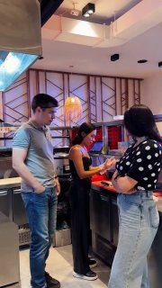
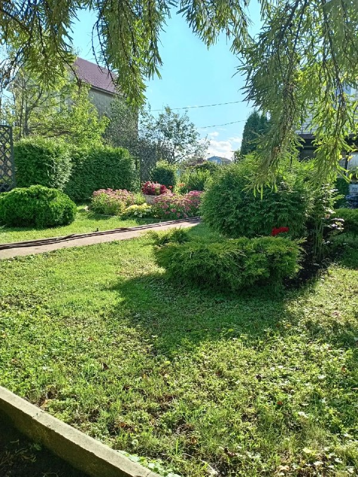
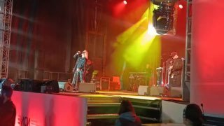
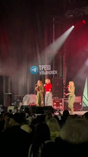
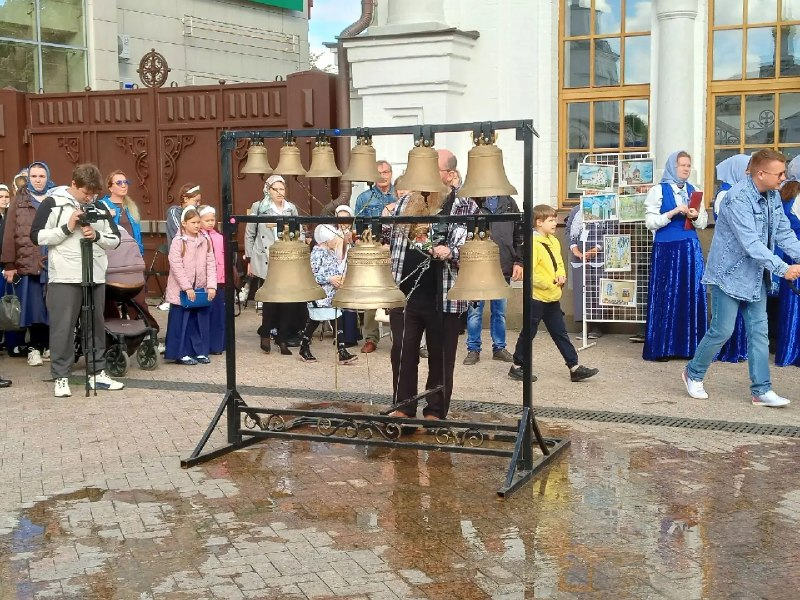
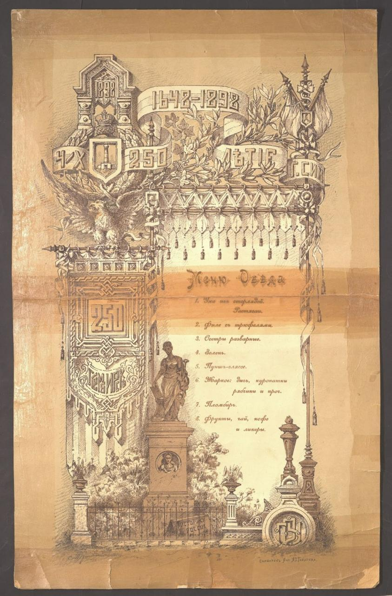

Трамп потребовал от Зеленского прекратить удары по российскому дизелю Президент США заявил, что Киев должен не…
По словам американского лидера, он уже лично обсуждал этот вопрос с Зеленским.…

Сегодня отмечается день образования нашего родного и любимого города Симбирска-Ульяновска. С праздником, ульяновцы!…


13 сентября, в День города, на Соборной площади прошла спортивная зарядка под руководством чемпиона мира и Европы по кикбоксингу Сергея Жукова. Сергей Евгеньевич — заслуженный мастер спорта России, основатель ульяновского спортивного клуба «Гулливер» и старший тренер сборной России по кикбоксингу.
По словам американского лидера, он уже лично обсуждал этот вопрос с Зеленским.…

«Нашему любимому Симбирску-Ульяновску исполнилось 378 лет!» — написал он в своих социальных сетях. И мы присоединяемся к поздравлениям! Пусть наш город развивается, становится комфортнее и красивее, а его главными богатствами остаются люди, которые здесь живут и любят свою малую родину.…
#Губернатор / власть#День города (378 лет)🔁 также: t.me/ulyanovsk_smi
Мэр Ульяновска Александр Болдакин поздравил горожан с 378-летием Симбирска – Ульяновска. В своем обращении он поблагодарил земляков за труд и заботу о городе и подчеркнул, что будущее города – в надежных руках ульяновской молодежи: – Друзья! Поздравляю вас с 378-летием Симбирска – Ульяновска!…
#Губернатор / власть#День города (378 лет)рублей в 2027 году, заявил профессор Финансового университета Сафонов. По его словам, для этого потребуется стаж около 40–45 лет, высокая официальная зарплата и 350–400 пенсионных коэффициентов.
По его словам, такие удары создают дефицит дизтоплива в мире и вредят другим странам.

Генеральный директор ульяновского автозавода Ильнур Сахабиев сдержал свое обещание и подарил ведущей программы «Наше всё» на Первом канале Полине Воробьевой розовый УАЗ "Патриот". Полина Воробьева выиграла в споре Сахабиевым во время съемок программы «Наше все. Сделано в России».…
#УАЗ / Соллерс🔁 также: t.me/ulpressa
А по промокоду TRESH26 вы получите подарок от «Сушивесла» — роллы «Калифорния» бесплатно при заказе от 990₽. Реклама. ООО «Меркурий». ИНН: 9729109919.

Правительство утвердит перечень продовольственных товаров для мониторинга, а также определит федеральные органы исполнительной власти, которые будут получать сведения о торговой деятельности.
#Губернатор / власть
Председатель Минского городского исполнительного комитета Владимир Кухарев от имени минчан поздравил жителей Ульяновска с днём города: - От имени всех минчан примите наши поздравления. Минск и Ульяновск являются городами побратимами.…
#День города (378 лет)#Авиапром / УКБП / Ил-114#Экспорт и кооперацияПрепарат будет полностью защищать от заражения. Сейчас специалисты анализируют данные, полученные от нескольких тысяч пациентов, и результаты обнадёживают, рассказал руководитель центра имени Гамалеи.
#Медицина🔁 также: t.me/chpulsk
Он написал на табличке, что преодолел 19 854 км ради просмотра турнира, а затем дождался нужного момента и... просто перевернул её . Правда, на другой стороне оказалась надпись « Педро Санчез — сын ш***и » (речь о премьер-министре Испании).…
#Губернатор / власть
13 сентября, в День города, на Соборной площади прошла спортивная зарядка под руководством чемпиона мира и Европы по кикбоксингу Сергея Жукова. Сергей Евгеньевич — заслуженный мастер спорта России, основатель ульяновского спортивного клуба «Гулливер» и старший тренер сборной России по кикбоксингу.
#День города (378 лет)#Спорт
Завершился матч 11-го тура Лиги Pari сезона-2026/2027, в котором встречались «Уфа» и ульяновская «Волга». Игра прошла на стадионе «Нефтяник» в Уфе. Матч закончился со счётом 2:2. В качестве главного арбитра выступил Ефим Рубцов. На 55-й минуте счёт открыл нападающий "Волги" Лука Багателия.…
#Спорт
С 12 по 15 сентября во Дворце художественной гимнастики «Татьяна-Арена» проходят всероссийские спортивные соревнования «Юные грации» по художественной гимнастике.…
#Выборы-2026#Городская среда#Спорт
19-летняя девушка вскрывала посылки, забирала товары себе, а пустые упаковки запечатывала обратно. Всего она похитила более 40 товаров, часть из которых продала. Возбуждено уголовное дело о мошенничестве. Девушка находится под подпиской о невыезде.
#Суды и криминал
О том, что его обокрали, пассажир узнал только после приземления: на телефон посыпались уведомления о транзакциях сразу по трём картам. Мужчина подал заявление в полицию. Оказалось, что подобных случаев очень много.…
#Авиапром / УКБП / Ил-114
У владельца FAW Bestune T55 мультимедийная система начала зависать буквально в первые дни . Вместе с ней отваливались климат-контроль, навигация, голосовое управление и функции мультируля . Дилер и импортёр проблему добровольно решать не захотели.…
#Транспорт и дороги#Суды и криминалПовреждены промышленные и гражданские объекты. Один из дронов попал в дерево и повредил стоявшую рядом машину, в которой находились четверо молодых людей. Двое погибли, еще двоих увезли в больницу в тяжелом состоянии. Кроме того, четыре человека пострадали при атаке на жилой дом.
#БПЛА и воздушные угрозы#МедицинаВозбуждено уголовное дело, сообщает Центральное МСУТ СК России.
#Авиапром / УКБП / Ил-114#Суды и криминал🔁 также: t.me/chpul
Там ему при установлении личности выдадут временное удостоверение, которое позволит добраться домой, рассказал в интервью ТАСС начальник пресс-службы столичного ГУ МВД РФ Васенин.…
#Спорт
Двое погибли, ещё двоих госпитализировали в тяжёлом состоянии. Ещё четыре человека пострадали при попадании БПЛА в жилой дом. Также повреждены промышленные и гражданские объекты, на одном из предприятий возник пожар.…
#БПЛА и воздушные угрозы#Погода
13 сентября в результате атаки БПЛА на Нижнекамск два человека погибли, еще 12 пострадали, сообщает пресс-служба главы Татарстана. Один из БПЛА ударил по жилому дому, ранения получили четыре человека. Еще один БПЛА попал в дерево и повредил стоявший рядом автомобиль. – В машине находились четыре молодых человека. Двое погибли.…
#БПЛА и воздушные угрозы#МедицинаОдин из БПЛА ударил по жилому дому, ранения получили четыре человека. Еще один БПЛА попал в дерево и повредил стоявший рядом автомобиль. - В машине находились четыре молодых человека. Двое погибли. Еще двое находятся в больнице в тяжелом состоянии, - сказал Беляев.
#БПЛА и воздушные угрозы#Медицина
В следствии чего пешеходы вынуждены идти вдоль дорожного полотна проезжей части. И результат не заставил себя ждать. Обрызгали мимо проезжающие машины с ног до головы (даже скорость не сбавил ГОВНА КУСОК на серой 12-ке, видел же пешехода идущего вдоль дороги).…
#Транспорт и дороги#Суды и криминал
Животное спокойно переплывало водоём прямо рядом с людьми. Похоже, рыбалка в этот день запомнилась ульяновцам не только уловом. 😍 — вот это да!…

В прохладную погоду птицы прячут тонкие лапы в перья ради терморегуляции. При этом уникальное строение суставов позволяет им намертво фиксировать баланс без напряжения мышц и спокойно спать в такой позе.
#Городская среда#Погода

❤️ Спасибо за фото нашей подписчице 💐 Если и у вас есть что показать или рассказать городу, пишите нам в предложку в Телеграм или в MAX .…
🔁 также: t.me/ulkoroche

Что стало причиной конфликта и есть ли пострадавшие, пока неизвестно. Подробности выясняются.…


Змея ползала среди травы. Откуда взялась змея её поймать, пока неизвестно.…
По прогнозам синоптиков, зима может оказаться более влажной и с частыми перепадами температуры. Эль-Ниньо — это природное климатическое явление, при котором в экваториальной части Тихого океана аномально прогреваются поверхностные воды. Оно заметно влияет на погоду и климат по всему миру.…
#Погода
Артист вышел к зрителям с хитами. Чтобы не пропустить самые яркие и интересные события, обязательно смотрите наш дайджест . А вы на мероприятиях?…
#День города (378 лет)#Городская средаС 1 сентября на неё отводится 50% курса «Основы безопасности и защиты Родины» — всего 68 часов за четыре учебных года, сообщил глава Минпросвещения. Предмет изучают с восьмого по одиннадцатый класс: по 34 часа приходится на первые два года и ещё 34 — на последующие. Раньше начальная военная подготовка занимала 20% времени.
#Городская среда#Школы и вузы
13 сентября отмечается день празднования в честь Собора Симбирских святых. Это главный праздник Симбирской митрополии — день, когда Церковь чтит память всех святых, просиявших на Симбирской земле. В Собор входит ныне 14 святых, 12 из них — новомученики и исповедники ХХ столетия.…
#День города (378 лет)#Школы и вузыТеперь на НВП приходится 68 часов — это половина курса «Основы безопасности и защиты Родины». Учиться военному делу дети будут с 8 класса.
#Городская среда#Школы и вузы🔁 также: t.me/ulsk_onЧтобы её получить, россияне должны официально работать 40 лет без остановки и получать от 250 тысяч в месяц, заявили в Финуниверситете при Правительстве РФ.
#Губернатор / властьПочти 800 тысяч подростков из 91 страны показали слабое понимание текстов, хуже справляются с математикой в реальной жизни и чаще не отличают научные факты от фейков. Среди причин исследователи называют соцсети и активное использование ИИ.
#Бюджет-2027#Школы и вузыДля её получения нужно официально отработать 40 лет без перерывов и получать от 250 тысяч рублей в месяц, заявили в Финуниверситете при Правительстве РФ.
#Губернатор / власть
С этого учебного года на нее отводится 50% от курса «Основы безопасности и защиты Родины», сообщил РИА Новости Кравцов.
#Школы и вузы
Сегодня, 13 сентября, в 11.00 в музее наличников во Владимирском саду откроется фотовыставка в рамках проекта «Наследие Ульяновской области: цифровое переосмысление, картирование, новые выставки» и празднования 378-летия города Ульяновска.…
#День города (378 лет)#Школы и вузы#Культура и туризмСегодня отмечается день образования нашего родного и любимого города Симбирска-Ульяновска. С праздником, ульяновцы!…
#День города (378 лет)#Школы и вузы




Чтобы не пропустить самые яркие и интересные события, обязательно смотрите наш дайджест . А вы уже там? 😍 — да! 😭 — нет……
#День города (378 лет)
Именно здесь в 1833 году Александр Пушкин гостил у своего друга Николая Языкова. В состав композиции вошли панно с видами Симбирска XIX века, указатель «Симбирск», бронзовый медальон и скульптура зайца. Автор проекта — художник Дмитрий Бобрович.…
#Городская среда#Культура и туризм

Звонари из разных городов России исполняют колокольные композиции.…
#День города (378 лет)#Культура и туризм
Рестораторы и владельцы холдинга «Другие рестораны» Ольга и Дмитрий Акулина воссоздали меню, которое 128 лет назад могло оказаться на праздничном столе у симбирской знати.…
#День города (378 лет)🔁 также: t.me/ulpressa| Тема | Завтра | Ожидание | Уверенность |
|---|---|---|---|
| День города (378 лет) | ↑ рост | ~33.0 упоминаний | средняя |
| Суды и криминал | ↑ рост | ~25.8 упоминаний | средняя |
| Школы и вузы | ↑ рост | ~24.2 упоминаний | средняя |
| Транспорт и дороги | ↑ рост | ~21.3 упоминаний | средняя |
| Городская среда | ↑ рост | ~22.8 упоминаний | средняя |
| БПЛА и воздушные угрозы | ↑ рост | ~17.2 упоминаний | средняя |